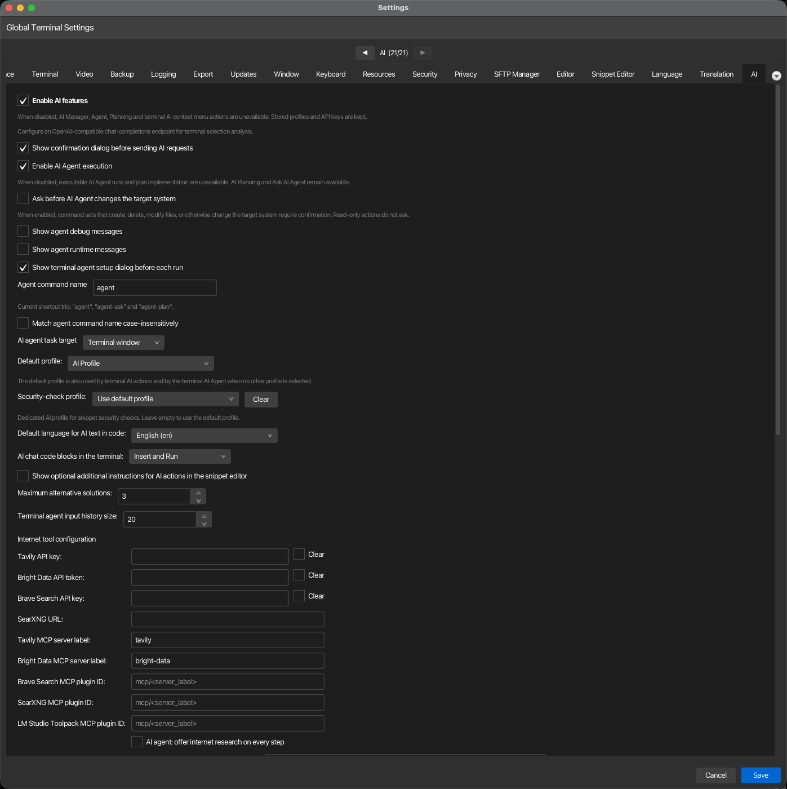
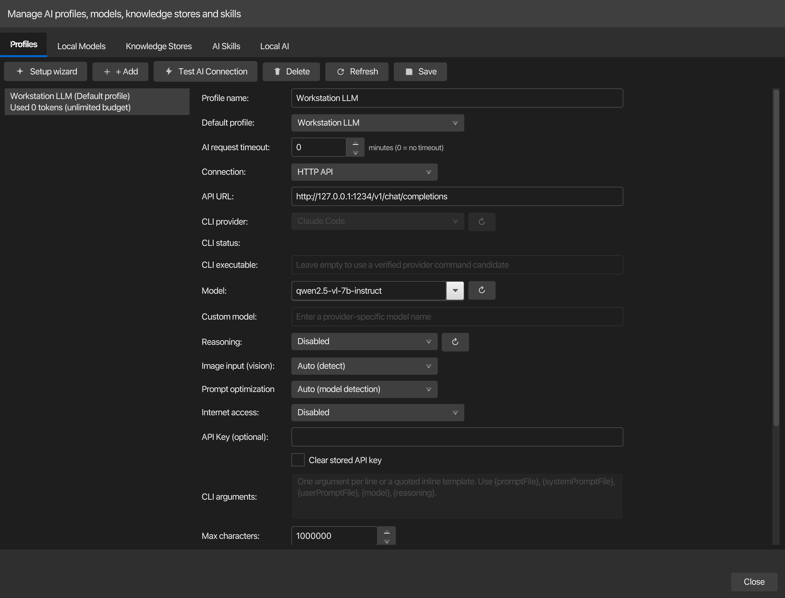

KI¶
Konfigurieren von KI-Profilen und Einstellungen für den Terminal-KI-Agent. Dies ist die umfassendste Einstellungs-Option, die KI-Funktionen, Profil- (mit Modell, API-Endpunkt, Verbindungsmethode und Schlussfolgerungsebene), Token-Quotenverwaltung, Einstellungen für den Snippet-Editor und die Konfiguration des Internetzugangs umfasst. Öffnen Sie sie über Konfiguration → Globale Einstellungen → KI; gespeichert in ~/.kortty/global-settings.xml.

Kern-Einstellungen¶
| Einstellung | Typ | Werte | Standard | Speichert als |
|---|---|---|---|---|
| KI-Funktionen aktivieren | Schalter | — | Ein | aiFeaturesEnabled |
| Bestätigungsdialog vor Absendung von KI-Anfragen anzeigen | Schalter | — | Ein | aiConfirmBeforeSend |
| KI-Chat-Codeblöcke im Terminal | Dropdown | Aus (nur kopieren und speichern), Nur Einfügen, Einfügen und Ausführen | Einfügen und Ausführen | aiChatTerminalActions |
KI-Chat-Codeblöcke im Terminal legt fest, welche Schaltflächen die Codeblöcke eines KI-Chats anbieten: Einfügen gibt einen Block an der Eingabeaufforderung eines Terminalbereichs ein, ohne Enter zu drücken, und Ausführen führt eine einzelne Shell-Befehlszeile nach einer Bestätigung aus. Die Unternehmensrichtlinie kann nur weitere Schaltflächen wegnehmen. Siehe Codeblöcke im Terminal.
KI-Agent im Terminal¶
| Einstellung | Typ | Werte | Standard | Speichert als |
|---|---|---|---|---|
| KI-Agent-Ausführung aktivieren | Schalter | — | Ein | terminalAgentExecutionEnabled |
| Frage vor der Änderung des Zielsystems durch den KI-Agent stellen | Schalter | — | Aus | terminalAgentConfirmMutatingCommandSets |
| Agent-Debugmeldungen anzeigen | umschalten | — | Aus | terminalAgentShowDebugMessages |
| Agent-Laufzeitmeldungen anzeigen | umschalten | — | Aus | terminalAgentShowRuntimeMessages |
| Terminal-Agent-Abfrage vor jedem Start anzeigen | umschalten | — | Ein | terminalAgentShowRunDialog |
| Agent-Kommando | Text | — | agent | terminalAgentCommandName |
| Den Agent-Befehl namensmäßig unabhängig von Groß- und Kleinschreibung abgleichen | umschalten | — | Aus | terminalAgentCommandNameCaseInsensitive |
| Ziel für KI-Agent-Aufgaben | Dropdown-Menü | Terminalfenster, Neues Chatfenster | Terminalfenster | terminalAgentExecutionTarget |
| Größe der Terminal-Agent-Eingabehistorie | Zahl | 5–100 | 20 | terminalAgentInputHistorySize |
KI-Profile¶
| Einstellung | Typ | Werte | Standard | Speichert als |
|---|---|---|---|---|
| Standardprofil | Dropdown-Kontrolle | (Liste der konfigurierten Profile) | — | defaultAiProfileId |
| Zeitlimit für KI-Anfragen | Zahl | 0 bis 1440 Minuten | 0 (kein Timeout) | aiRequestTimeoutMinutes |
| Security-Check-Profil | Dropdown-Kontrolle | (Liste der konfigurierten Profile; leer = Standardprofil verwenden) | — | securityCheckAiProfileId |
Das Security-Check-Profil ist ein spezielles KI-Profil für Snippet-Security-Check-Aktionen. Lassen Sie es leer (oder verwenden Sie Keine) um das Standardprofil zu verwenden. Es kann ebenfalls direkt im Fenster für das Snippet-Security Check festgelegt werden, und beide Orte teilen dieselbe gemerkte Einstellung.
Zeitlimit für KI-Anfragen ist die maximale Laufzeit einer einzelnen KI-Anfrage und gilt für jedes Profil. Der Standardwert 0 bedeutet, dass korTTY kein Zeitlimit vorschreibt: Aufwändige Aufgaben wie die Vollständige Code-Analyse im Snippet-Editor laufen bis der KI-Modell eine Antwort gibt. Legen Sie eine positive Zahl in Minuten fest, um Anfragen zu unterbrechen, die diese Dauer überschreiten. Ein Profil kann den Wert überschreiben — siehe unten unter Zeitlimit für dieses Profil.
Profil-Einstellungen (in Editor-Grid)¶
Die gleichen Felder werden im KI > KI-Manager > Profile bearbeitet, wo das gesamte Formular sofort sichtbar ist:

| Einstellung | Typ | Werte | Standard | Speichert als |
|---|---|---|---|---|
| Profilname | Text | — | KI-Profil | (Feld Profil name) |
| Verbindung | Dropdown | HTTP-API, Lokale CLI, Integriertes llama.cpp, Integriertes MLX (Apple-Silizium; nur auf Mac-Geräten mit Apple-Silizium verfügbar) | HTTP-API | (Profilfeld connectionMode) |
| API-URL | Text | — | — | (Profilfeld apiUrl) |
| Vertrauenswürdiger lokaler Endpunkt: Terminal-Auswahlen ohne Maskierung von Geheimnissen senden | Kontrollkästchen | Nur verfügbar für ein HTTP-API-Profil, dessen API-URL auf localhost oder 127.0.0.1 liegt. Ein: Terminalauswahlen und angehängte Dateien erreichen diesen Endpunkt ohne Maskierung – schalten Sie es nur ein, wenn der Endpunkt das Modell selbst ausführt, nicht für einen Proxy oder eine SSH-Portweiterleitung zu einer Cloud-API. Siehe Maskierung von Geheimnissen vor dem Senden |
Aus | (profile trustedLocalEndpoint field) |
| CLI-Anbieter | Dropdown | (registrierte Anbieter) | — | (Profilfeld cliProviderId) |
| CLI-Executable | Text | — | — | (Profilfeld cliExecutablePath) |
| Modell | Dropdown/Text | (bearbeitbar; "Standard", vorgeschlagene Modelle von Cloud-Anbietern mit kurzen Vorschlägen plus live geladene Modelle; "Automatisch" nur für lokale LM Studio-Endpunkte) | — | (Profilfeld model) |
| Lokales GGUF-Modell | Dropdown | Installierte Chat-Modelle; verfügbar, wenn Verbindung Integriertes llama.cpp ist | — | (Profilfeld embeddedModelId) |
| Lokales MLX-Modell | Dropdown | Installierte MLX-Modelle; verfügbar, wenn Verbindung Integriertes MLX (Apple Silicon) ist | — | (Profilfeld embeddedModelId) |
| Eigenes Modell | Text | — | — | (Profilfeld cliCustomModel) |
| Prompt-Optimierung | Dropdown | Automatisch (Modellerkennung), Allgemein, Llama, Qwen, Mistral, Gemma, DeepSeek, Phi, GPT-OSS | Automatisch | (Profilfeld promptPreset) |
| Reasoning | Dropdown | Deaktiviert, Keine, Minimal, Niedrig, Mittel, Hoch, Extra hoch | Deaktiviert | (Profilfeld reasoningEffort) |
| Bild-Eingabe (Vision) | Dropdown | Automatisch (erkennen), Aktiviert, Deaktiviert | Automatisch (erkennen) | (Profilfeld visionSupport) |
| Internetzugriff | dropdown | Deaktiviert, KorTTY Tavily Tool, LM Studio Tavily MCP, Bright Data Web MCP, Brave Search MCP, SearXNG MCP, LM Studio Toolpack (gesperrt auf Deaktiviert, mit Hinweis, für eine native Anthropic Messages API URL) | Deaktiviert | (Profil internetAccessMode Feld) |
| API-Schlüssel (optional) | Text | (Passwortfeld) | — | (Profilfeld encryptedApiKey) |
| Maximale Zeichen | Zahl | 1–50.000.000 | 100.000 | (Profilfeld maxSelectionChars) |
| Zeitlimit für dieses Profil | Kontrollkästchen + Zahl | Eigenes Zeitlimit aus = globales Zeitlimit folgen; ein: 0–1440 Minuten (0 = niemals abgelaufen) | Aus | (Profilfeld requestTimeoutMinutes) |
| Maximale Ausgabe-Tokens | Kontrollkästchen + Zahl | Eigenes Limit aus = automatisch je Modell und Aktion; an: 256–1.048.576 Tokens pro Antwort | Aus | (Profilfeld maxOutputTokens) |
| Tokenizer | Dropdown | Schätzung, OpenAI cl100k_base, OpenAI o200k_base, OpenAI p50k_base, OpenAI r50k_base | Schätzung | (Profilfeld tokenizerType) |
| Maximale Tokens | Zahl + Einheit | (Menge: 0–1.000.000; Einheit: Tausende oder Millionen) | 0 (unbegrenzt) | (Profil tokenLimitAmount, tokenLimitUnit-Felder) |
| Warnschwellen | Zahl-Paar | Gelb %: 0–100, Rot %: 0–100 | 75%, 90% | (Profil tokenWarningYellowPercent, tokenWarningRedPercent-Felder) |
| Zurücksetzen | Zahl + Startdatum | Zeitraum: 1–3650 Tage; Startdatum | 30 Tage | (Profil tokenResetPeriodDays, tokenResetAnchorDate-Felder) |
| Preis pro 1 Mio. Tokens | zwei Zahlen + Währung | Preis für Eingabe und Ausgabe pro eine Million Tokens (Komma oder Punkt als Dezimaltrennzeichen; leer = kein Preis); Währung EUR, USD, CHF, GBP oder jeder ISO-Code. Bearbeitet in KI → KI-Manager → Profile | leer, EUR | (Profil pricePerMillionPromptTokens, pricePerMillionCompletionTokens, priceCurrency Felder) |
| KI-Verbindung testen | Schaltfläche | — | — | (nur Aktion) |
Snippet-Editor¶
| Einstellung | Typ | Werte | Standard | Speichert als |
|---|---|---|---|---|
| Standardsprache für KI-Texte im Programmcode | Dropdown-Kontrolle | (verfügbare Sprachoptionen) | — | aiCodeTextDefaultLanguage |
| Optionale zusätzliche Anweisungen für KI-Aktionen im Snippet-Editor anzeigen | Schalter | — | Aus | aiSnippetEditorAdditionalInstructionsEnabled |
| Maximale Anzahl alternativer Lösungen | Zahl | 1–10 | 3 | aiSnippetAlternativeSolutionCount |
Internetzugangskonfiguration¶
| Einstellung | Typ | Werte | Standard | Speichert als |
|---|---|---|---|---|
| Tavily-API-Schlüssel | Text | (Passwortsfeld) | — | encryptedAiTavilyApiKey |
| Bright-Data-API-Token | Text | (Passwortsfeld) | — | encryptedAiBrightDataApiToken |
| Brave-Search-API-Schlüssel | Text | (Passwortsfeld) | — | encryptedAiBraveSearchApiKey |
| SearXNG-URL | Text | — | — | aiSearxngUrl |
| Tavily-MCP-Serverlabel | Text | — | tavily | aiTavilyMcpServerLabel |
| Bright-Data-MCP-Serverlabel | Text | — | bright-data | aiBrightDataMcpServerLabel |
| Brave Search MCP-Plugin-ID | Text | — | — | aiBraveSearchMcpPluginId |
| SearXNG-MCP-Plugin-ID | Text | — | — | aiSearxngMcpPluginId |
| LM-Studio-Toolpack-MCP-Plugin-ID | Text | — | — | aiLmStudioToolpackMcpPluginId |
| KI-Agent: Internetforschung auf jedem Schritt anbieten | Schalter | — | Aus | aiAgentAlwaysOfferWebTools |
KI-Agent: Internetforschung auf jedem Schritt gilt ausschließlich für den KorTTY Tavily Tool-Modus. Wenn deaktiviert, erhält ein Terminal-KI-Agent-Schritt nur die Webtools, falls die Aufgabe ein Web-Signalwort oder eine URL enthält; wenn aktiv, erhält jeder Schritt diese Tools und das Modell entscheidet, ob eine Seite abgefragt oder gelesen werden soll.
Hinweise¶
KI-Profile¶
korTTY speichert mehrere benannte KI-Profile, jedes mit eigener Modellvariante, Verbindungsmethode, Vorgangsregeln, Prompt-Vorlage und optionalem Wissensspeicher. Jedes Profil verfolgt seine eigenen Token-Nutzung separat. Die Profile unterstützen drei Verbindungsmodi:
- HTTP-API: Direkte Verbindung zu einem OpenAI-kompatiblen REST-Endpunkt (geben Sie die API-URL, das Modellnamen und optional die API-Schlüssel an).
- Lokale CLI: Ausführung eines lokalen Befehlszeilen-Tools für KI (konfigurieren Sie den CLI-Anbieter, die benutzerdefinierte Ausführbarkeit, die Argumentenvorlage und den benutzerdefinierten Modellnamen).
- Integriertes llama.cpp: Wählen Sie den installierten Chat-GGUF im Lokalen GGUF-Modell aus. korTTY erhält einen privaten Loopback-
llama-server-Zugriff (Lease) dafür; die API-URL und das Profil-API-Schlüssel werden von korTTY verwaltet und sind nicht bearbeitbar.
Ein explizit ausgewählter oder sicherheitsgeprüfter Profil bleibt am spezifischsten. Andernfalls verwenden Aktionen im Terminal den konfigurierten Textprofil, Aktionen im Code das Coding-Profil, und ein nicht zugewiesenes Rolle fällt auf das Standardprofil zurück. Konfigurieren Sie diese Rollen und die lokale Laufzeit unter KI > KI-Manager > Lokale KI; siehe Lokale Modelle mit llama.cpp.
Der KI-Manager ist moduslos und kann während der Nutzung des Hauptfensters geöffnet bleiben. Ein erneutes Aufrufen des Managers führt dazu, dass der gleiche Manager für das Hauptfenster wiederhergestellt und gefokussiert wird, und der offene primäre Abschnitt bleibt bei Interaktion mit den Steuerelementen sichtbar mit einem fett unterstrichenen Akzent.
Einstellungen des lokalen KI-Managers¶
| Wert für | Werte | Standard | als gespeichert |
|---|---|---|---|
| Profil für Text und Übersetzung | konfiguriertes KI-Profil oder Standard verwenden | Standard verwenden | textAiProfileId |
| Coding-Profil | konfiguriertes KI-Profil oder Standard verwenden | Standard verwenden | codingAiProfileId |
| Sitzungsjournal-Profil | konfiguriertes KI-Profil oder Standard verwenden | Standard verwenden | sessionJournalAiProfileId |
| RAG-Embedding-Modell-ID | Installiertes lokales Embedding-Modell | — | ragEmbeddingModelId |
| llama.cpp Runtime-Updates | Aus, Benachrichtigen, Stabile Updates automatisch installieren | Benachrichtigen | llamaRuntimeUpdatePolicy |
| Bevorzugtes Runtime-Backend | Auto/CPU/Metal unter macOS; Auto/CPU/Vulkan unter Windows/Linux | Auto | preferredLlamaRuntimeBackend |
| Hugging Face token | Optionales verschlüsseltes Token für begrenzte/private Repositorys | — | encryptedHuggingFaceToken |
Automatisch (aktives Backend beibehalten) behält das aktive Runtime-Paket-Backend für Updates. Bei fehlenden installierten Paketen wählt Auto standardmäßig Metal unter macOS und CPU an anderen Orten. Das Starten eines Modells, das für ein anderes unterstütztes GPU-Backend konfiguriert ist, bietet die Installation des entsprechenden signierten Pakets an.
Der Local Models > Einrichtungsassistent bietet optionale Text-, Coding- und RAG-Embedding-Slots an. Er überprüft jede ausgewählte feste Revision, Quantisierung, Lizenz und genaue Größe vor dem Start des asynchronen Runtime/Modell-Installationsprozesses, führt für jedes installierte GGUF ein echtes Chat- oder Embedding-Test durch und speichert die resultierenden Rolle-Zuweisungen erst dann, wenn alle Tests erfolgreich sind. Die Text- und Coding-Slots können ein gemeinsames Modell teilen. Konfigurieren weigert sich, die persistierten Runtime-Einstellungen eines Modells zu ersetzen, während dieses eine aktive Anfrage bearbeitet.
Die Wissensspeicher, die der Text/Coding-Rolle zugewiesen sind, fügen lediglich begrenzte, zitierten Ausschnitte zu passenden normalen Terminal- und Snippet-KI-Anfragen hinzu, nie den gesamten Wissensspeicher. Ein Cloud-Text/Coding-Profil erhält diese Ausschnitte über seine konfigurierte Verbindung mit dem Anbieter, weshalb die Zuweisung des Wissensspeichers an diese Rolle oder Profil explizite Genehmigung für diese Offenlegung darstellt. Agenten, Planung, Swarm und geplante autonome Prompts bleiben eine separate Option; siehe Wissensspeicher für RAG.
Prompt-Optimierungsvorlagen¶
Automatisch (Modellerkennung) löst gängige Namen für Llama, Qwen, Mistral/Mixtral, Gemma, DeepSeek, Phi und GPT-OSS auf. Ein Familienprofil bietet präzise Hinweise zur Kompatibilität, bleibt jedoch bei den strengen JSON/Code-Verträgen von korTTY. Generisch liefert keine familienbezogenen Hinweise. llama.cpp wendet den eingebauten Chat-Vorlage des GGUF an.
Einstellungen für das Denkverhalten¶
Die Einstellung für das Denkverhalten bestimmt, wie gründlich die KI vor der Antwort nachdenkt. Die verfügbaren Ebenen hängen vom Modell und dem Endpoint ab:
- Deaktiviert: Kein Denkparameter übermittelt; das Modell verwendet seinen Standardverhalten.
- Keine: Die Nutzung der Reasoning explizit deaktivieren, wobei der vom Transport unterstützte Standardwert verwendet wird.
- Minimal: Leichtes Reasoning; schnellste Ausführung.
- Niedrig: Geringe Anstrengung bei der Reasoning; Balance zwischen Geschwindigkeit und Tiefe.
- Mittel: Mittlere Anstrengung; angemessene Tiefe.
- Hoch: Hohe Anstrengung; umfassendere Begründung.
- Extra hoch: Maximaler Begründungsanstrengung; am langsamsten, aber umfassendest.
Nicht alle Modelle unterstützen alle Ebenen. Wenn LM Studio über seine native Modellmetadaten capabilities.reasoning.allowed_options veröffentlicht, verwendet korTTY diese genaue Liste anstelle davon, einen stumm umgewandelten Wert als unterstützten zu behandeln, und liest diese Liste automatisch: Wenn Sie im Profil-Editor ein anderes Modell oder Endpunkt wählen, wird die Metadaten für das gerade ausgewählte Modell erneut geladen, sodass die Dropdown-Liste dem Profil folgt, ohne zusätzliche Aktionen. Die Liste wird hier ausschließlich aus den Modellmetadaten des Endpunkts gelesen – ein einziger Anruf, der keinen Prompt enthält. Verwenden Sie die Schaltfläche Reasoning-Optionen aktualisieren, wenn Sie eine erneute Prüfung erzwingen oder bei einem Endpunkt, der keine solche Metadaten veröffentlicht, benötigen: Diese Schaltfläche führt auch aktive Verbindungstests durch.
Für ein binäres off/on-Modell deaktiviert ein explizites none-Angebot diese Funktion, während die Omission des Begründungsparameters das veröffentlichte Standardverhalten des Modells verwendet; die nicht unterstützten Ebenen Minimal, Niedrig, Mittel, Hoch und Extra hoch werden nicht angeboten. Ein Modell, dessen LM Studio-Metadaten keine Begründungsfunktion publizieren, einschließlich eines virtuellen Modells, das seine Begründungsmetadaten auf falsch überschreibt, bietet ausschließlich Deaktiviert: LM Studio überspringt bei einem nicht unterstützten Begründungswert bei der Anfrage mit einer Protokollwarnung anstatt die Anfrage abzulehnen, sodass ein aktiver Test jede Ebene als unterstützend vermuten würde.
Eine erkannte Liste gehört dem Endpoint und dem Modell an, für das sie gelesen wurde. Änderungen an entweder der Konfiguration oder dem Modell führen dazu, dass die Liste verworfen wird. Wird von korTTY das Metadaten der neuen Kombination nicht gelesen — beispielsweise ein CLI-Profil oder ein Cloud-Endpoint — fällt das Profil auf die konservativen Standardwerte für den Modellnamen zurück, bis Sie Reasoning-Optionen aktualisieren. Ein Level, das nicht mehr angeboten wird, wird aus der Anfrage entfernt, wobei eine Log-Zeile den tatsächlich verwendeten Level benennt. Felder, die vom eigenen Verbindungsmodus des Profils nicht verwendet werden, wie beispielsweise der CLI-Anbieter eines HTTP-Profils, verursachen nie eine Ungültigkeit einer erkannten Liste. Profile, die ein integriertes Modell verwenden, behalten ihre erkannten Levels.
Für MiniMax-Endpunkte (direkt oder über einen Aggregator, dessen Modellname minimax enthält), werden sowohl Deaktiviert als auch ein explizites none als Parameter des eigenen MiniMax-thinking: disabled übermittelt, da diese Modelle den reasoning_effort-Parameter ignorieren und standardmäßig den Hidden-Reasoning als Completion-Tokens berechnen — für MiniMax-M3 wird der Antwort mit einem inline-<think>-Block gestartet. Ein explizites Leistungsniveau wird unverändert weitergeleitet.
Für MiniMax wird die OpenAI-kompatible URL https://api.minimax.io/v1/chat/completions verwendet anstatt dem nativen /text/chatcompletion_v2-Endpoint: Der native Endpoint antwortet mit HTTP 200 und einem Fehlerobjekt, wenn ein falscher Schlüssel, ein falsches Modell oder ein leerer Balance-Status vorliegt, was korTTY nun als eigenes Provider-Meldung anzeigt, während der OpenAI-kompatible Endpoint diese mit einem korrekten HTTP-Status meldet.
Für den nativen Anthropic-(Claude-)Endpunkt fordert ein aktiviertes Reasoning-Level erweitertes Denken mit einem vom Level abhängigen Denkbudget an; Modelle, die erweitertes Denken nicht unterstützen, werden einmal ohne es erneut angefragt. Das Budget bleibt immer unter dem Ausgabelimit der Anfrage — siehe Ausgabelimit pro Antwort. Das Reasoning des Modells wird in den 💭-Denkzeilen des Terminal-KI-Agenten angezeigt.
Ausgabelimit pro Antwort¶
Maximale Ausgabe-Tokens begrenzt, wie viele Tokens eine Antwort einschließlich Denken verwenden darf. Ist Eigenes Limit aus, wählt korTTY das Limit automatisch. Der Wert kann ein Limit nur senken, nie erhöhen: Aktionen mit eigenem Sicherheitslimit — ein Mermaid-Diagramm (32.768 Tokens), eine Snippet-Bearbeitung mit vollständiger Ersetzung, die Code-Vervollständigung (4.096 Tokens) oder ASCII-Art — behalten dieses Limit, auch wenn das Profil mehr zulässt.
Beim nativen Anthropic-(Claude-)Endpunkt ist das Limit jeder Anfrage der kleinste Wert aus dem Sicherheitslimit der Aktion, den Maximale Ausgabe-Tokens des Profils, dem dokumentierten Ausgabelimit des Modells und 16.000 Tokens. korTTY kennt die Ausgabelimits der aktuellen Claude-Familien (Opus, Sonnet und Fable 5.x, Opus 4.6–4.8 und Sonnet 4.6 mit 128.000 Tokens; Opus 4.5, Sonnet 4.5 und Haiku 4.5 mit 64.000 Tokens); jedes andere Modell erhält 4.096 Tokens, sofern das Profil kein eigenes Limit setzt. Die Obergrenze von 16.000 Tokens gilt, weil korTTY Anthropic-Antworten noch nicht streamt und Anthropic für größere Ausgaben Streaming empfiehlt, damit eine lange Anfrage ohne Rückmeldung nicht abgebrochen wird. Ein Denkbudget wird immer strikt unterhalb des Limits eingepasst – verkleinert, wenn es zu wenig Platz für die Antwort ließe, und verworfen, wenn es unter Anthropics Minimum von 1.024 Tokens fiele. Lehnt die API eine Anfrage ab, weil max_tokens für das Modell zu hoch ist, wiederholt korTTY sie einmal mit dem im Fehler genannten Limit. Ist ein Anfrage-Timeout gesetzt, erhöht korTTY es bei einem großen Limit, damit die Antwort Zeit hat anzukommen (etwa 7,5 Minuten für 16.000 Tokens); ohne Timeout ändert sich nichts.
Bei OpenAI-kompatiblen Endpunkten wird der Profilwert als max_tokens für jede Anfrage gesendet, die kein eigenes Aktionslimit hat.
Bild-Eingabe (Vision)¶
Bild-Eingabe (Vision) entscheidet, ob korTTY Bilder zu einem Prompt für dieses Profil anhängen darf – verwendet von der KI-Bildschirm-Aufnahme-Analyse des Session-Journal. Automatisch (erkennen) ermittelt die Fähigkeit vom Endpunkt: für einen lokalen LM Studio-Endpunkt sind die Modell-Metadaten autoritativ (ein vlmModell gilt als bildfähig; die Antwort wird zusammen mit den Reasoningsstufen – durch das automatische Metadaten-Lesen und durch Reasoning-Optionen aktualisieren – gelesen und mit ihnen zwischengespeichert), der native Anthropic-Endpunkt gilt immer als bildfähig, und andere Endpunkte werden anhand bekannter Vision-Modellnamen erkannt (GPT-4o/4.⅕, o3/o4, Gemini, Gemma 3, Qwen-VL, LLaVA, Pixtral und ähnliche). Aktiviert/Deaktiviert überschreiben die Erkennung für Modelle, die falsch eingeschätzt werden. CLI- und integrierte (llama.cpp/MLX) Profile können keine Bilder senden. Lokale LM Studio-Vision-Modelle (vlm) erscheinen ebenfalls im Modell-Dropdown.
Token-Quoten-Verwaltung¶
Jedes KI-Profil verfügt über ein Token-Verbrauchslimit mit den folgenden Einstellungen:
- Tokenizer: Wählen Sie den Token-Tokenizer aus, der die Tokenanzahl schätzt — nützlich, wenn zwischen OpenAI und anderen Anbietern gewechselt wird. Mögliche Optionen sind Schätzung (allgemein), cl100k_base (GPT-3.5/4), o200k_base (o1/o1-mini), p50k_base (Codex) und r50k_base (GPT-2).
- Maximale Tokens-Grenze: Legen Sie ein Ausgabenlimit (in Tausend oder Millionen von Tokens oder unbeschränkt) fest. Die Tokenanzahl wird nach einem gleitenden Zeitplan neu berechnet.
- Reset-Periode: Anzahl der Tage zwischen den Resets (1–3650), wobei ein optionaler Referenzdatum für vorhersehbare Resetzeiten verwendet wird.
-
Warnschwellen: Eine gelbe Warnung wird bei einem bestimmten Prozentsatz der Grenze ausgelöst; eine rote Warnung bei einem höheren Prozentsatz. Beide Werte können als ganze Zahlen zwischen 0 und 100 konfiguriert werden.
-
Preis pro 1 Mio. Tokens (nur im KI-Manager, optional): der Preis, den der Anbieter pro eine Million Eingabe- und Ausgabe-Tokens verlangt. Mit einem Preis zeigt korTTY, was KI-Aufrufe kosten in Geld – neben der Quotenleiste als „≈ 3,42 € in diesem Zeitraum“, auf Sitzungsjournale und im KI-Swarm Dashboard-Header. Ein Profil, das lokal läuft (ein integriertes llama.cpp/MLX-Modell oder ein Endpunkt auf
localhost/127.0.0.1), wird stattdessen als „lokal · keine Token-Kosten“ angezeigt.
Die Token-Nutzung wird im Profil-Editor als farbige Balken und Zusammenfassung angezeigt, und die Profilliste zeigt den Tokenstatus inline. Die Nutzung wird für jeden KI-Aufruf gezählt, der mit dem Profil ausgeführt wird: Chat-Antworten, der Terminal-KI-Agent, jeder Agent eines KI-Swarms im Lauf plus seine endgültige kombinierte Antwort, geplante KI-Jobs und jeder Aufruf des Sitzungsjournals (Zusammenfassungen, Titel, Screenshot-Analyse, Fragen, Übersetzungen).
Internet-Zugriffs-Modi¶
Pro-Profil-Strategie für den Internetzugriff bei KI-Anfragen. Jeder Modus erfordert unterschiedliche Anmeldeinformationen und eine MCP-Konfiguration:
- Deaktiviert (Standard): Kein Internetzugriff.
- KorTTY Tavily Tool: Integrierte Web-Suche mithilfe der Tavily-API direkt (erfordert Tavily-API-Schlüssel).
- LM Studio Tavily MCP: Websuche über eine LM Studio Tavily MCP-Instanz (erfordert Tavily-API-Schlüssel und MCP-Server-Bezeichnung).
- Bright Data Web MCP: Strukturierte Datenextraktion und Durchsuchen über Bright Data Web MCP (erfordert Bright-Data-API-Token und MCP-Server-Label).
- Brave Search MCP: Suchen über Brave Search MCP (erfordert Brave-Search-API-Schlüssel und MCP-Plugin-ID im
mcp/<server_label>-Format). - SearXNG MCP: Suchen über eine SearXNG MCP-Instanz (erfordert SearXNG-URL und MCP-Plugin-ID im Format
mcp/<server_label>). - LM Studio-Toolpack: Community-LM Studio-Toolpack-Web-Suchserver (erfordert Plugin-ID im Format
mcp/<server_label>).
Die Anmeldeinformationen werden verschlüsselt und sicher gespeichert. Verwenden Sie den Keinen-Schalter neben jedem Geheimnisfeld, um die gespeicherten Werte beim nächsten Speichern zu löschen.
Integrierte Profile unterstützen ausschließlich das KorTTY Tavily Tool
Ein Profil, dessen Verbindungsmodus Integriertes llama.cpp oder Integriertes MLX ist, kann verwenden KorTTY Tavily Tool und nichts sonst. Die fünf MCP-Mode leiten die Anfrage über LM Studio's native API, das ein eingebettetes Modell niemals durchläuft – die Auswahl eines auf einem eingebetteten Profil falscht die Anfrage mit einer expliziten Nachricht statt stumm ohne Webzugriff zu antworten. Lokale CLI-Profile verfügen über keine Internet-Modi; das Dropdown-Menü ist für sie deaktiviert.
Native Anthropic Messages API-Profile (eine API-URL, die mit /v1/messages endet) haben ebenfalls keine Internet-Modi, weil korTTY keine Web-Tools an diese API sendet: das Dropdown ist auf Deaktiviert festgelegt, und ein Hinweis darunter erklärt warum. Ein von einer früheren Version gespeicherter Modus wird als Deaktiviert angezeigt, wenn das Profil geöffnet wird und hat keinen Einfluss auf Anfragen.
Eine Organisation kann den Web-Zugriff vollständig verbieten, indem sie den allow-internet-Policy-Schlüssel verwendet — siehe
Enterprise-Politik.